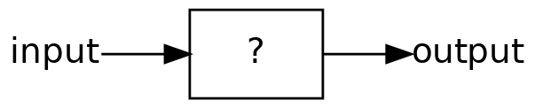
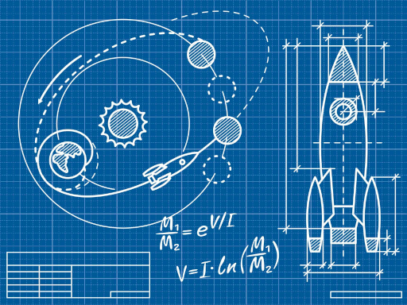
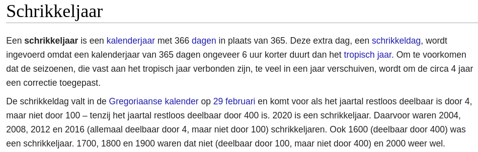
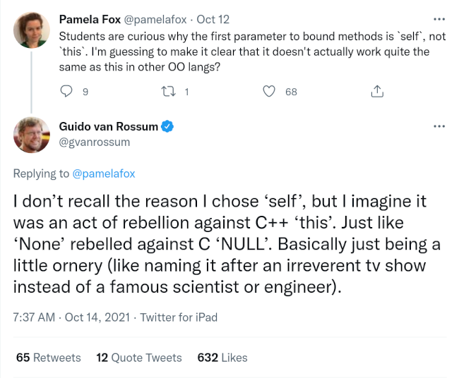
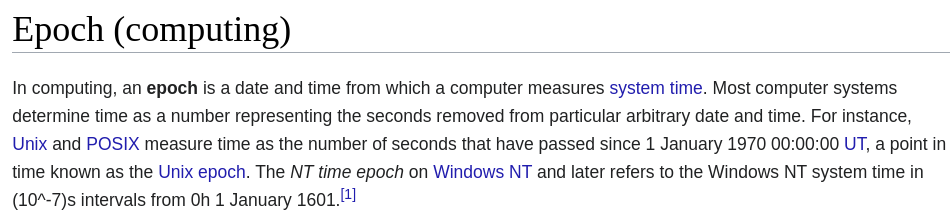
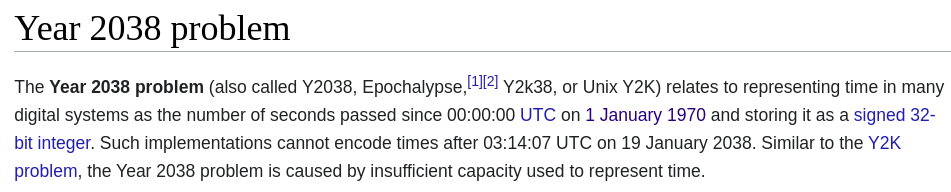

Klassen en objecten
Contents
Klassen en objecten#
Het ontwerpen van data
Een geheel nieuwe ~~klasse~~ class van programmeren!
Bouwstenen#
functies
compositie
Een probleem opdelen in functies, waar elke functie verantwoordelijk is voor een deel van de oplossing. Je hebt niet alleen eigen functies geschreven, maar bedenk ook hoe vaak je ingebouwde functies als len, min, max hebt gebruikt als onderdeel van jouw composities!
Achter het gordijn#
schakelingen
assembly
lussen
Data#
De representatie van informatie: typen
string
int / float
list
En combinaties van typen als LoL’s!
Algoritmen#
Het ontwerpen van handelingen op data

Het ontwerpen van data (typen)?
Object oriëntatie#
Een objectgeoriënteerde taal maakt het mogelijk eigen typen variabelen te maken
Python is een objectgeoriënteerde taal!
Terminologie#
Veel nieuwe termen!
klasse, instantie, object
attributen/velden
constructor
methoden
self
Klassen en objecten#
Een klasse is een type
Een object is een specifieke instantie van dat type
Zie een type als een mal, waar er maar één van is, maar waar véél objecten (instanties) van kunnen worden gemaakt. De klasse definieert de “vorm”, een object is de concrete uitwerking van deze vorm (koekjes!).

Een klasse kan je ook zien als een blauwdruk of bouwtekening (een getedailleerde mal). Het definieert de eigenschappen van een object (een raket, een huis, …). Het beschrijft wat het is maar ook wat het kan (een raket kan vliegen, in een huis met keuken kan worden gekookt, …).
Python aanpassen#
Alles in Python is een object (variabele)
Wat het kan (functies, of “methoden”) wordt bepaald door de klasse (type)
En beter, je kan eigen types maken!
Alles is een object?#
Wat we typen …
s = "Astronaut wordt snel oud tijdens een reis naar Mars"
en wat er eigenlijk gebeurt
s = str("Astronaut wordt snel oud tijdens een reis naar Mars")
De variabele s is een object, het is een instantie van de klasse str. Het lijkt op de aanroep van een functie, en dat is het ook! Het roept de constructor methode van de klasse aan met de waarde voor de nieuwe instantie. Meer hier over later!
type(s)
str
s.split()
['Astronaut', 'wordt', 'snel', 'oud', 'tijdens', 'een', 'reis', 'naar', 'Mars']
Naast dat het een waarde representeert (een reeks karakters) kan het ook dingen doen! Bijvoorbeeld zichzelf als een list van afzonderlijke strings, gesplitst op spaties (standaard als geen parameter aan split wordt meegegeven op welk karakter moet worden gesplitst).
dir(s)[-10:]
['rstrip',
'split',
'splitlines',
'startswith',
'strip',
'swapcase',
'title',
'translate',
'upper',
'zfill']
dir geeft een overzicht van de attributen (vaak ook velden genoemd) van dit object. Waar komen deze attributen vandaan? Ze zijn beschreven in de klasse! We zijn er veel en kiezen hier een selectie van de laatste 10, je ziet daar onder andere de methode split!
Objecten#
Een object is een structuur
de data elementen hebben namen (attributen, of velden)
een object heeft functies (methoden) die het zelf kan gebruiken (maar ook wij!)
Methoden#
De functies van een klasse worden methoden genoemd
Een aantal methodenamen staan vast (afspraak) en hebben een specifieke functie
Deze name zijn te herkennen aan de dubbele underscores voor en na de naam, bijvoorbeeld
__init__(de constructor)__repr__(een string representatie van het object, voor printen)
Methoden met dubbele underscores worden ook wel dunder methoden genoemd. Het is een conventie in Python om speciale methoden op deze manier te schrijven. Handig, want op deze manier zijn ze beter te ondescheiden van andere methoden (die jij gaat schrijven!).
Een klasse Student ontwerpen#
Een student gaat studeren…
Data
naam
jaar (aanvang studie)
Methoden
twee methoden die Python van ons vraagt
__init____repr__
een eigen methode,
defer(uitstellen studie)
class Student:
"""A class representing students
"""
def __init__(self, name, yr):
"""The constructor
"""
self.name = name
self.year = yr
def __repr__(self):
"""For printing
"""
return self.name + " " + str(self.year)
def defer(self, num_yrs):
"""Defer study for num_years
"""
self.year += num_yrs
a = Student("Peter Been", 2021)
b = Student("Jasper Klein", 2021)
c = Student("Linda Buitendijk", 2022)
d = Student("Myrthe Zomer", 2021)
print(b)
Jasper Klein 2021
b.name
'Jasper Klein'
dir(b)[-10:]
['__reduce_ex__',
'__repr__',
'__setattr__',
'__sizeof__',
'__str__',
'__subclasshook__',
'__weakref__',
'defer',
'name',
'year']
Ook hier laten we maar de laatste 10 zien, je ziet hier de velden name en year terug, en ook de methode defer.
b.defer(1)
b.year
2022
print(b)
Jasper Klein 2022
Een Date klasse#
Data
dag
maand
jaar
class Date:
"""Date is a user-defined data structure --
a class that stores and manipulates dates
"""
def __init__(self, day, month, year):
"""The constructor for objects of type Date
"""
self.day = day
self.month = month
self.year = year
def __repr__(self):
"""This method returns a string representation for the
object of type Dat that calls it (named self)
"""
return f"{self.day:02d}/{self.month:02d}/{self.year:04d}"
def is_leap_year(self):
"""Returns True if self, the calling object, is
in a leap year; False otherwise
"""
if self.year % 400 == 0: return True
if self.year % 100 == 0: return False
if self.year % 4 == 0: return True
return False
Een object d#
d = Date(11, 12, 2013)
id(d)
140501810441728
type(d)
__main__.Date
Stap voor stap#
class Date:
"""Date is a user-defined data structure --
a class that stores and manipulates dates
"""
Dit is het begin van een nieuw type Date aangeven door het class keyword
Let op de dubbele punt, dit betekent dat alles wat volgt ingesprongen moet worden omdat het bij de klasse hoort.
def __init__(self, day, month, year):
"""The constructor for objects of type Date
"""
self.day = day
self.month = month
self.year = year
Dit is de constructor voor Date objecten. Dit is de plek voor waar input data wordt toegekend aan de (data) velden.
De velden zijn de informatie die in elk Date object aanwezig zijn.
def __repr__(self):
"""This method returns a string representation for the
object of type Dat that calls it (named self)
"""
return f"{self.day:02d}/{self.month:02d}/{self.year:04d}"
Dit is de string representatie van Date objecten, het vertelt Python hoe een Date object moet worden geprint.
f"strings"#
Strings formatteren, handig!
klassen = 12
studenten = 25
f"{klassen} klassen met {studenten} studenten is in totaal {klassen * studenten}"
'12 klassen met 25 studenten is in totaal 300'
x = 1
f"{x:02d}"
'01'
02d formatteert de integer x tot een string met een minimale breedte van 2 posities, en “zero-padding” (voorloopmullen) links, indien nodig.

def is_leap_year(self):
"""Returns True if self, the calling object, is
in a leap year; False otherwise
"""
if self.year % 400 == 0:
return True
if self.year % 100 == 0:
return False
if self.year % 4 == 0:
return True
return False
Waarom wordt self gebruikt en niet d?
self#
Is de variabele die de methode aanroept

Misschien heb je al kennisgemaakt met andere programmeertalen en zal je herkennen dat self overeenkomt met wat je kent als this in deze talen (bijvoorbeeld in Java of C++). Guido van Rossum geeft hier antwoord op de vraag waarom niet voor this is gekozen, en legt het uit als een daad van speels verzet.
Het is hier misschien ook van belang om stil te staan bij het feit dat programmeertalen niet zomaar zijn ontstaan, het is mensenwerk en wij bouwen weer voort op het werk van anderen!
wd = Date(11, 12, 2013)
print(wd)
11/12/2013
wd.is_leap_year()
False
d = Date(11, 12, 2020)
print(d)
11/12/2020
d.is_leap_year()
True
Al deze methoden (__init__, is_leap_year) hebben toegang nodig tot het object dat ze aanroept (self).
Quiz#
De anatomie van een klasse
class Date: # (1)
def __init__(self, day, month, year): # (2)
self.day = day # (3)
self.month = month # (4)
self.year = year # (5)
def __repr__(self): # (6)
return f"{self.day:02d}/{self.month:02d}/{self.year:04d}" # (7)
def is_leap_year(self): # (8)
if self.year % 400 == 0: return True
if self.year % 100 == 0: return False
if self.year % 4 == 0: return True
return False
# (9)
wd = Date(11, 12, 2013) # (10)
ny = Date(1, 1, 2021) # (11)
Probeer de volgende onderdelen aan te wijzen:
classkeywordwaar eindigt de klassedefinitie?
objectdefinities, 2 totaal
methoden, 3 totaal
constructor
datavelden (attributen), 3 totaal
wat print
Date’s?
Oplossing#
classkeyword: (1)waar eindigt de klassedefinitie?: (9)
objectdefinities, 2 totaal: (11, 12)
methoden, 3 totaal: (2, 6, 8)
constructor: (2)
datavelden (attributen), 3 totaal: (3, 4, 5)
wat print
Date’s?: (6)
Methoden en operatoren#
Als alles een object is …
21 < 42
True
"🥚" > "🐔"
True
history = Date(1, 1, 1970)
epoch = Date(1, 1, 1970)
epoch == history
False
Dit werkt niet en dat is jammer! Dit gaan we straks oplossen, je zal Python moeten vertellen dat de operator == (en anderen) betekenis heeft als we objecten van type Date willen gaan vergelijken.
Epoch?#

Epochalypse!#
Tot hoeveel kan je tellen?

Operatoren#
methode |
operator |
|---|---|
|
|
|
|
|
|
|
|
|
|
|
|
|
|
|
What’s the diff?#
%run date2.py
epoch = Date(1, 1, 1970)
today = Date(6, 12, 2020)
Via een methode
today.diff(epoch)
18602
epoch.diff(today)
-18602
Where’s the dow?#
sm1 = Date(28, 10, 1929)
sm2 = Date(19, 10, 1987)
Gebruikt een named object
sm1.dow()
'Monday'
sm2.dow()
'Monday'
Zonder naam, unnamed!
Date(1,1,1).dow()
'Monday'
Date(1,1,2021).dow()
'Friday'
unnamed?#
str("Astronaut wordt snel oud tijdens een reis naar Mars").split()
['Astronaut', 'wordt', 'snel', 'oud', 'tijdens', 'een', 'reis', 'naar', 'Mars']
"Astronaut wordt snel oud tijdens een reis naar Mars".split()
['Astronaut', 'wordt', 'snel', 'oud', 'tijdens', 'een', 'reis', 'naar', 'Mars']
Het == probleem#
wd = Date(11, 12, 2013)
wd
11-12-2013
wd2 = Date(11, 12, 2013)
wd2
11-12-2013
wd == wd2
True
Waarde versus identiteit#
id(wd)
140501810888656
id(wd2)
140501810878960
== zal standaard controleren op identiteit, de geheugenlokatie!
Vergelijken op waarde#
Laten we een eigen test voor gelijkwaardigheid schrijven!
class Date:
def __init__(self, day, month, year):
"""The constructor for objects of type Date
"""
self.day = day
self.month = month
self.year = year
def __repr__(self):
return f"{self.day:02d}/{self.month:02d}/{self.year:04d}"
def is_leap_year(self):
if self.year % 400 == 0: return True
if self.year % 100 == 0: return False
if self.year % 4 == 0: return True
return False
def equals(self, other):
"""Returns True if they represent
the same date; False otherwise
"""
if (
self.year == other.year
and self.month == other.month
and self.day == other.day
):
return True
else:
return False
wd = Date(11, 12, 2013)
wd2 = Date(11, 12, 2013)
wd.equals(wd2)
True
wd2.equals(wd)
True
Maar …
wd == wd2
False
__eq__#
Vertel Python wat wij met gelijkwaardigeid bedoelen!
class Date:
def __init__(self, day, month, year):
"""The constructor for objects of type Date
"""
self.day = day
self.month = month
self.year = year
def __repr__(self):
return f"{self.day:02d}/{self.month:02d}/{self.year:04d}"
def is_leap_year(self):
if self.year % 400 == 0: return True
if self.year % 100 == 0: return False
if self.year % 4 == 0: return True
return False
def __eq__(self, other):
"""Returns True if they represent
the same date; False otherwise
"""
if (
self.year == other.year
and self.month == other.month
and self.day == other.day
):
return True
else:
return False
wd = Date(11, 12, 2013)
wd2 = Date(11, 12, 2013)
wd == wd2
True
Hergebruik#
De methode equals blijven gebruiken maar ook Python vertellen over gelijkwaardigheid (__eq__)?
class Date:
def __init__(self, day, month, year):
"""The constructor for objects of type Date
"""
self.day = day
self.month = month
self.year = year
def __repr__(self):
return f"{self.day:02d}/{self.month:02d}/{self.year:04d}"
def is_leap_year(self):
if self.year % 400 == 0: return True
if self.year % 100 == 0: return False
if self.year % 4 == 0: return True
return False
def equals(self, other):
"""Returns True if they represent
the same date; False otherwise
"""
if (
self.year == other.year
and self.month == other.month
and self.day == other.day
):
return True
else:
return False
def __eq__(self, other):
return self.equals(other)
Operator overloading#
Python duidelijk maken wat een type bedoelt!
__eq__(self, other)definieert de gelijkheid operatator==__ne__(self, otherdefinieert de ongelijkheid operatator!=__lt__(self, other)definieert de kleiner dan operatator<__gt__(self, other)definieert de groter dan operatator>__le__(self, other)definieert de kleiner of gelijk aan operatator<=__ge__(self, other)definieert de groter of gelijk aan operatator>=__add__(self, other)definieert de optelling operatator+__sub__(self, other)definieert de aftrekking operatator-
Morgen en gisteren#
class Date:
...
def tomorrow(self):
"""Moves the self date ahead 1 day
"""
DIM = [0, 31, 28, 31, 30, 31, 30, 31, 31, 30, 31, 30, 31]
self.day += 1 # first, add 1 to self.day
if ...: # test if we have gone "out of bounds"!
self.month ...
self.day ...
if ...: # then adjust the month and year, but only as needed!
self.year ...
self. month ...
Februari is variabel#
class Date:
...
def tomorrow(self):
"""Moves the self date ahead 1 day
"""
if self.is_leap_year():
fdays = 29
else:
fdays = 28
DIM = [0, 31, fdays, 31, 30, 31, 30, 31, 31, 30, 31, 30, 31]
self.day += 1 # add 1 to the day
if self.day > DIM[self.month]: # check day
self.month += 1
self.day = 1
if self.month > 12: # check month
self.year += 1
self.month = 1